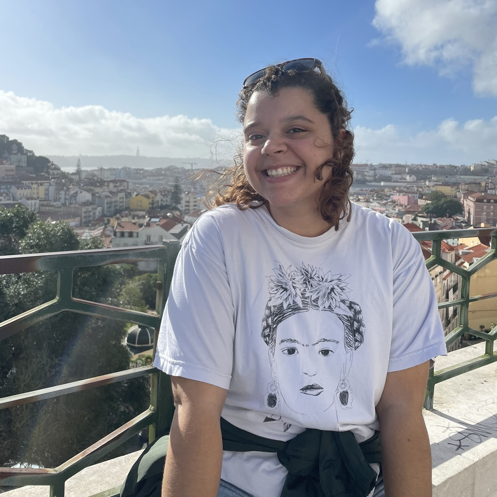

Hi! I'm Jojo.
I am a graphic design student at the University of Connecticut. I also had the amazing opportunity to study design at Central Saint Martins in London during my Fall 2022 semester at UConn.
I’m passionate about creating playful and interactive designs. The main focus of my current work centers around analog work, but I’ve been able to gain experience in other areas of design, such as publication design, industrial design, coding, and motion graphics.
I love to learn and take on new creative opportunities, so if you are looking for a skilled and enthusiastic designer, please feel free to reach out. Thanks for looking at my portfolio.